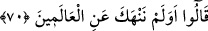
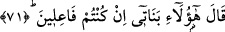

68. (Lût) onlara: “Bunlar benim misafirimdir. Sakın beni utandırmayın;”
Misâfirlerine karşı kötü niyet beslediklerini anlayan Lût (a.s.): “Bunlar benim
misâfirimdir. Sakın” onlara kötü niyetle saldırarak “beni,” saygı duyulmayan itibarsız
biri konumuna düşürüp “utandırmayın;” beni onlar nezdinde rüsvâ etmeyin, ya da
misâfirlerimi rezil ederek beni de rezil etmiş olmayın. Çünkü misâfirine ya da
komşusuna değer verilmeyen bir kimseye de değer verilmiyor, demektir. Nitekim değer
verildiği zaman da öyledir. Meleklere ‘misâfir’ denmesi, misâfir görünümünde
oldukları için Lût (a.s.)’ın onları öyle zannetmesi hasebiyledir.
69. “Allah’tan korkun, beni rezil etmeyin!” dedi.
Beni kötü durumda bırakacak bir fiile teşebbüs etme ya da o çirkinliği irtikâb etme
konusunda: “Allah’tan korkun,” O’nun emir ve yasaklarını gözetin. “Sakın beni
utandırmayın” “dedi” himâyeme aldığım bu kişilere böylesine çirkin bir fiille
saldırmak sûretiyle beni rezil rüsvâ etmeyin değerimi düşürmeyin. Misâfirlerin önünde
hor kılmayın ve utandırmayın.
70. “Biz seni, elâlemin işine karışmaktan men etmemiş miydik?” dediler.
“Biz seni, elâlemin işine karışmaktan” yâni buraya dışarıdan gelmiş olanları himâye
etmekten “men etmemiş miydik?” dediler.” Çünkü bu çirkinliği sâdece dışarıdan gelen
kimselere yapıyorlardı.
el-İrşâd’da şöyle der: “Daha önce seninle konuşup sana onları bizden men’etmeni
yasaklamamış mıydık!” demektir. Onlar dışarıdan gelen herkese musallat oluyordu. Lût
(a.s.) da tâkati yettiğince onları bundan vazgeçirmeye çalışıyordu. Onlar ise hiç kimseyi
himâyesine almaması hususûnda kendisini uyarıyor ya da: ‘Bundan vazgeçmediğin
takdirde, kesinlikle buradan sürülenlerden olacaksın!’ (eş-Şuarâ, 26/167) diye
tehdîd ediyorlardı.
71. (Lût:) “İşte kızlarım! (Düşündüğünüzü) yapacaksanız (onlarla evlenin)”
dedi.